Outcome
What are we trying to explain?
Example: time spent foraging.
Documenting and evaluating data to answer scientific question
WELCOME · DAY 2
Describe what the bird does.
Ask what might explain it.
Look for evidence that distinguishes explanations.
Identify what birds do and the context in which it occurs.
Choose what to record and how to record it consistently.
Decide what the evidence can—and cannot—tell us.
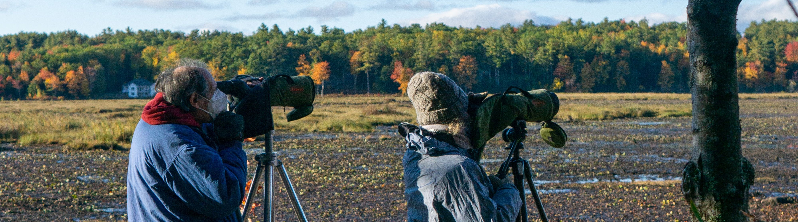
MODULE 1 · FROM QUESTION TO METHOD
You notice that birds appear to spend more time feeding in some parts of a wetland than others. You want to investigate whether food availability is related to foraging activity.
What are we trying to explain?
Example: time spent foraging.
What might account for variation?
Example: food availability.
What factors might influence the pattern?
Example: water depth, vegetation, organic matter.
What data would help answer the question?
Example: behavioural records and resource sampling.
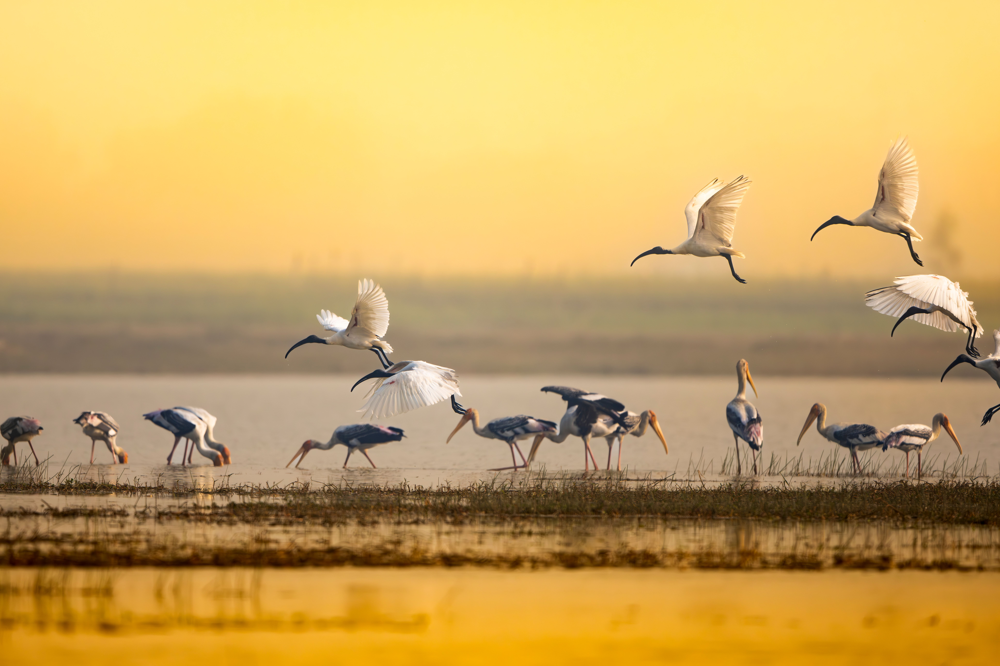
MODULE 1 · ANSWER THIS
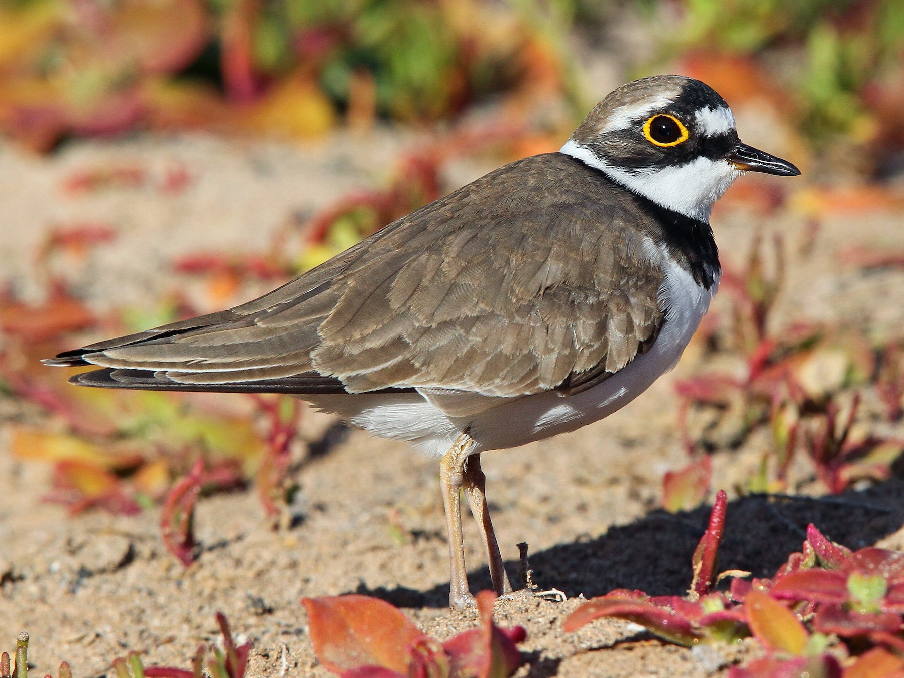
Little ringed plover
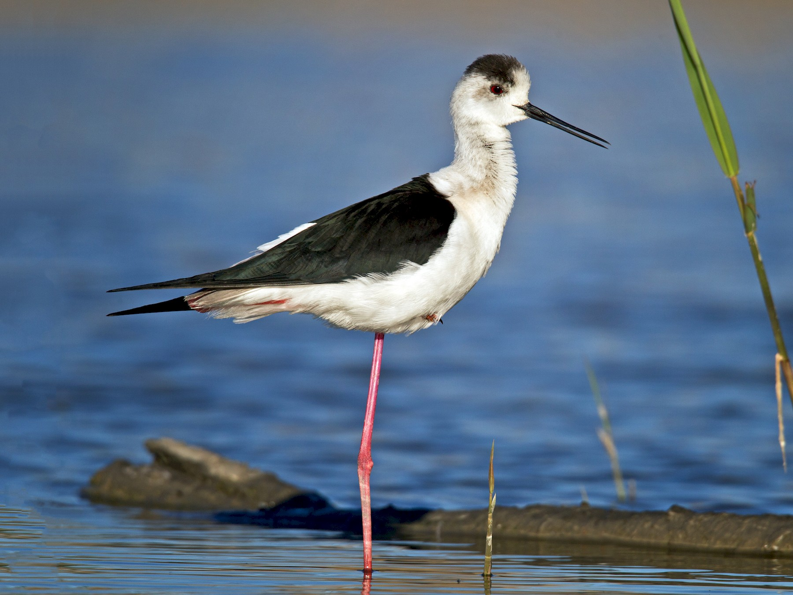
Black-winged stilt
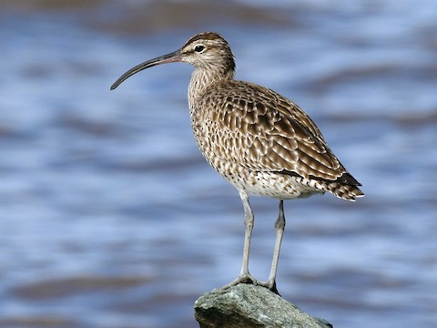
Eurasian whimbrel
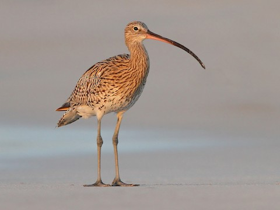
Eurasian curlew
A study by Aarif et al (2024) found that these shorebirds used different areas within a mudflat. What could be a potential explaination for this pattern?
Choose an answer to see feedback.
MODULE 1 · QUICK CHECK
A researcher wants to investigate whether individual birds spend more time scanning their surroundings when potential predators are nearby. Which approach would best address this question?
Choose an answer to see feedback.
MODULE 2 · OBSERVING BIRDS IN THE FIELD
Behavioural observation begins with a clear focus: an individual, a group, a particular interaction or a specific context.
Follow a particular bird and document its activities and interactions.
Useful for: behavioural sequences and individual variation.
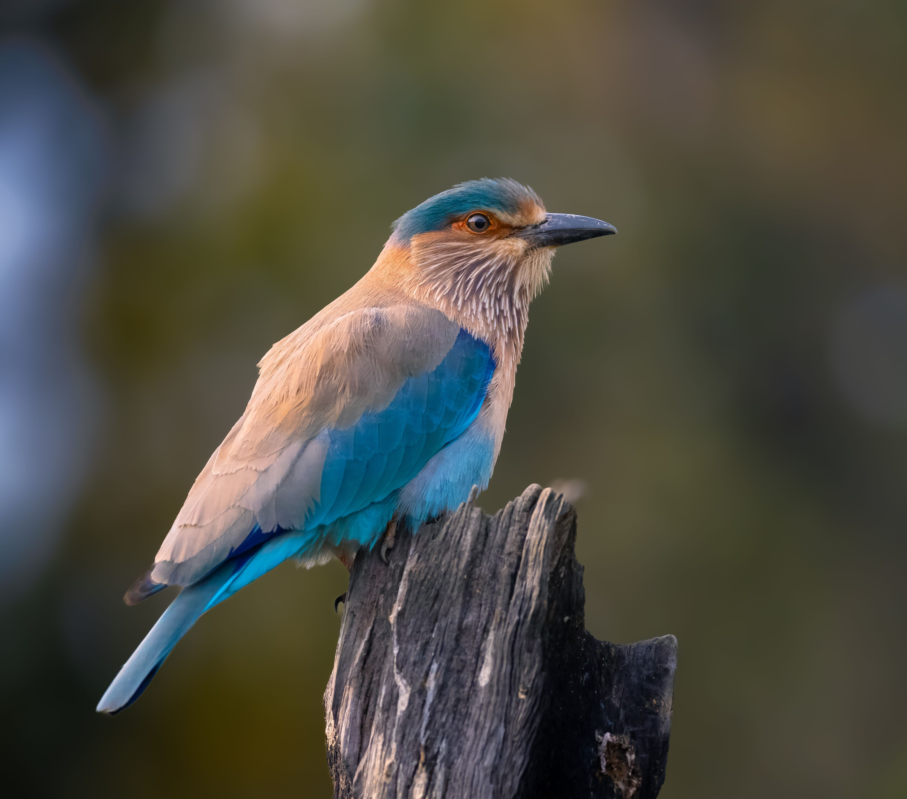
Observe interactions among individuals, such as aggression or coordinated movement.
Useful for: social and collective behaviour.
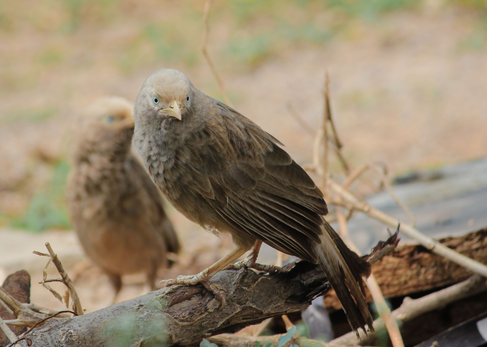
Observe behaviour in a particular situation, such as feeding, courtship or a territorial encounter.
Useful for: relating behaviour to its circumstances.
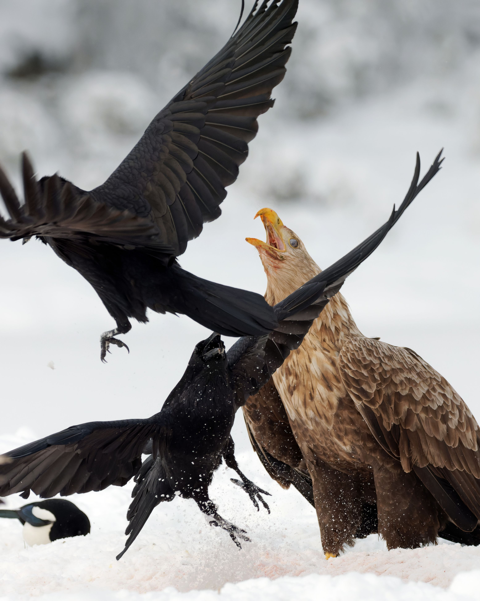
MODULE 2 · SAMPLING AVIAN BEHAVIOUR
The sampling rule determines which individuals you observe and how your observations are organised.
Follow one individual.
Record the behaviour of a selected bird throughout a defined observation period.
| Time (MM:SS) | Behaviour |
|---|---|
| 00:00–02:00 | Feeding |
| 02:00–02:30 | Vigilance |
| 02:30–04:00 | Feeding |
| 04:00–04:30 | Preening |
| 04:30–06:00 | Feeding |
Example question: How much time does an individual bird spend feeding?
Check the group at set intervals.
At each scan, record what each visible bird is doing at that moment.
| Scan time | Feeding | Resting | Preening |
|---|---|---|---|
| 10:00 | 6 | 3 | 1 |
| 10:02 | 5 | 4 | 1 |
| 10:04 | 7 | 2 | 1 |
| 10:06 | 8 | 1 | 1 |
Example question: What proportion of a flock is feeding at each scan?
MODULE 2 · SAMPLING AVIAN BEHAVIOUR
Case study: Human-provided food increases aggregation but does not change activity budgets in an urban wading bird.
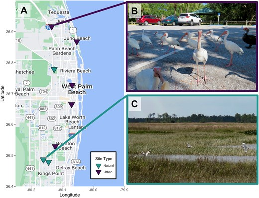
Did the activity budgets of ibis flocks differ between urban parks and more natural wetland sites?
Activity budgets were broadly similar between site types, although a larger proportion of urban birds was observed walking.
MODULE 2 · SAMPLING AVIAN BEHAVIOUR
The same study (Wilson et al. 2024) used a different sampling rule to study effect of flock size and food provisioning on behaviour
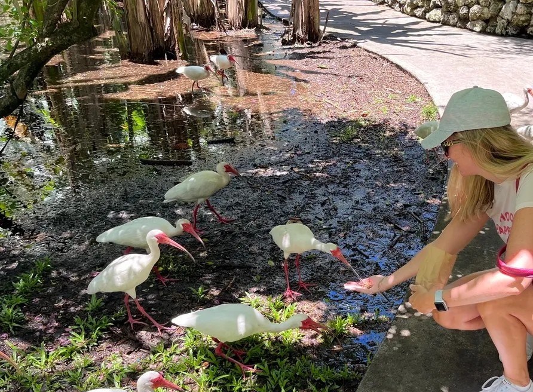
Within urban parks, how are ibis activity patterns associated with flock size and the frequency of human food provisioning?
🍽️ Foraging time ↓ as flock size ↑ and food provisioning ↑
The researchers found no clear evidence that those factors affected grooming or vigilance time.
MODULE 2 · SAMPLING AVIAN BEHAVIOUR
A study (Mahendiran 2016) of three sympatric cormorant species in India.
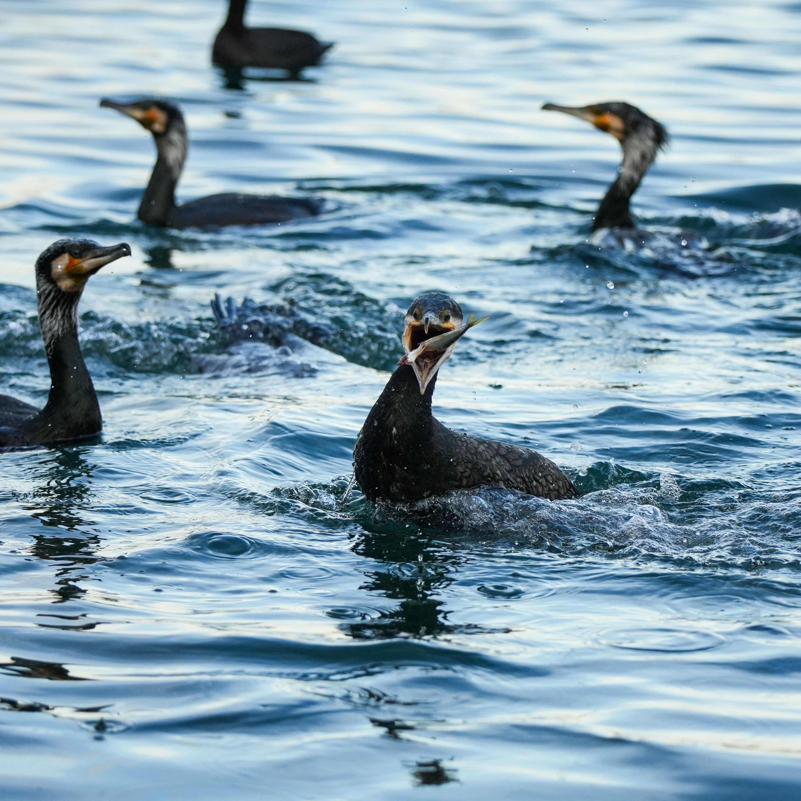
How do three coexisting cormorant species differ in their use of time while foraging, and how might these differences contribute to coexistence?
The researchers could compare foraging time and diving behaviour among species, investigating how they partitioned this resource.
MODULE 2 · SAMPLING AVIAN BEHAVIOUR
Ad libitum sampling: record any behaviour that catches your attention, without a predefined sampling rule.
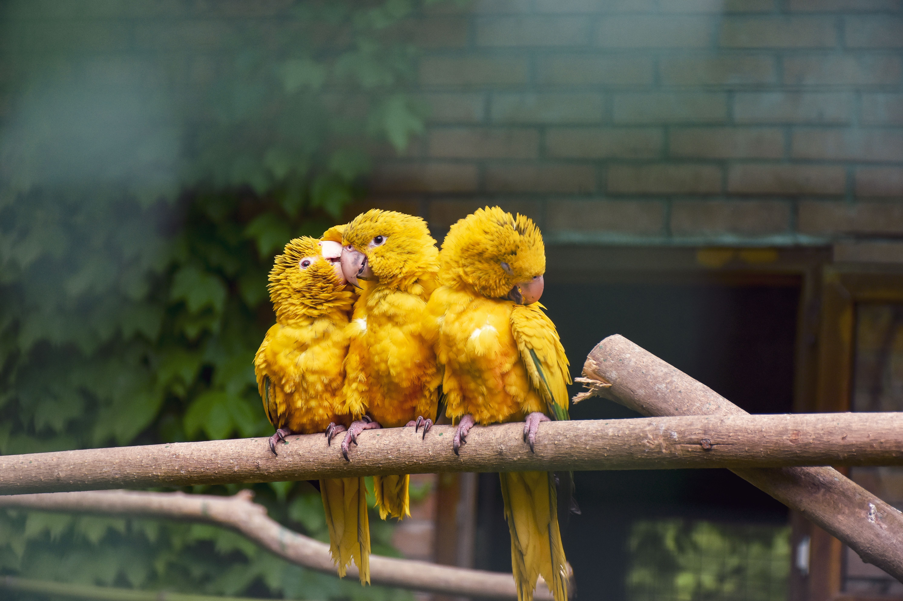
Example: exploratory observations of captive parakeets (Clyvia, Faggioli & Cipreste, 2015)
You notice and write down behaviours as they occur:
| Observation | Behaviour noted |
|---|---|
| 1 | One bird feeds the other. |
| 2 | One bird displaces the other from a perch. |
| 3 | Both birds preen their feathers. |
| 4 | One bird repeatedly plucks its own feathers. |
These notes may help you identify a range of behaviours, develop an ethogram and formulate questions for a more structured study.
MODULE 2 · SAMPLING AVIAN BEHAVIOUR
Recording rules determine how each behaviour is documented during an observation.
Record every behavioural change.
Note when a behaviour starts and ends, and record each occurrence according to your protocol.
| Time | Behaviour |
|---|---|
| 00:00–01:00 | Feeding |
| 01:00–01:30 | Preening |
| 01:30–02:00 | Feeding |
Useful for: measuring behavioural frequency, duration and sequences.
Record behaviour at specific moments.
At predetermined times, note the behaviour being performed at that instant.
| Scan time | Behaviour |
|---|---|
| 00:00 | Feeding |
| 00:30 | Feeding |
| 01:00 | Preening |
| 01:30 | Feeding |
Useful for: estimating activity budgets and comparing activity patterns.
MODULE 2 · RECORDING AVIAN BEHAVIOUR
Continuous recording captures the timing and duration of every observed behavioural bout.
| Start | End | Behaviour | Duration |
|---|---|---|---|
| 09:00:00 AM | 09:00:18 AM | Feeding | 18 sec |
| 09:00:18 AM | 09:00:25 AM | Vigilance | 7 sec |
| 09:00:25 AM | 09:00:47 AM | Feeding | 22 sec |
| 09:00:47 AM | 09:01:00 AM | Preening | 13 sec |
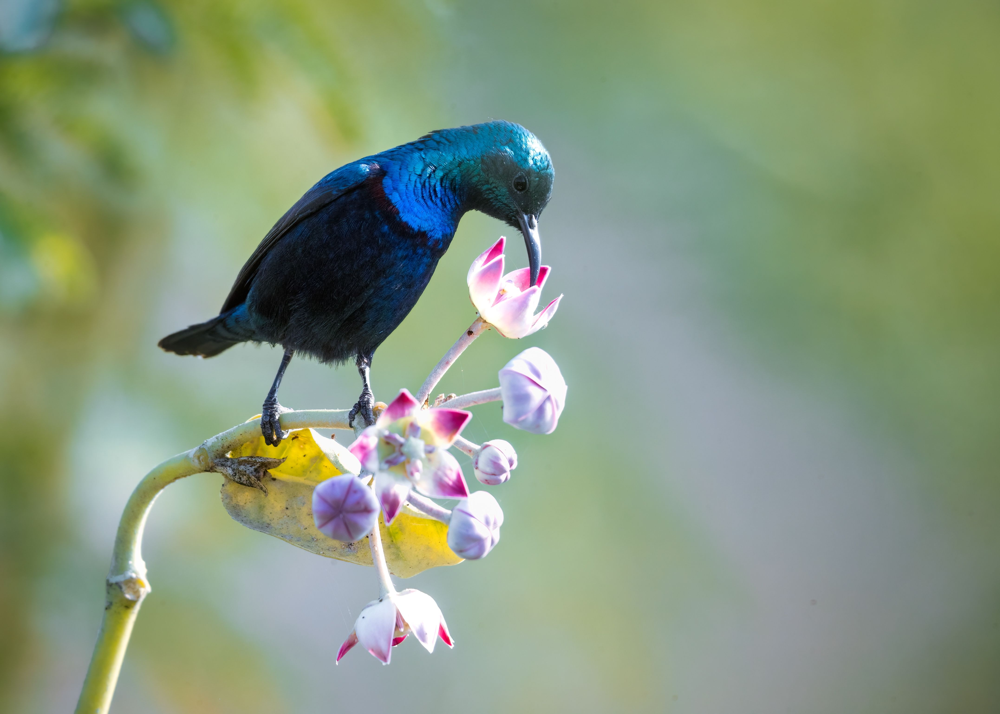
Total feeding time: 40 seconds
Number of feeding bouts: 2
Time spent feeding: 66.7% of the 60-second observation.
It captures short behaviours that might be missed during periodic checks and allows us to study behavioural sequences.
MODULE 2 · RECORDING AVIAN BEHAVIOUR
Instantaneous sampling captures behaviour at predetermined moments, rather than recording every change.
| Time | Observed behaviour |
|---|---|
| 09:00 AM | Feeding |
| 09:01 AM | Feeding |
| 09:02 AM | Vigilance |
| 09:03 AM | Feeding |
| 09:04 AM | Preening |
| 09:05 AM | Feeding |
Feeding was recorded in 4 of the 6 observations.
Observed proportion feeding: 66.7% of scans.
A brief behaviour that occurs and ends between two recording moments may never appear in the dataset.
MODULE 2 · RECORDING AVIAN BEHAVIOUR
One-zero recording captures whether a behaviour occurred at any point within a defined time interval.
You observe two parrots for one minute, dividing the session into 10-second intervals. You record play as 1 if it occurs at any point during an interval, and 0 if it does not.
| Interval | Play observed? | Score |
|---|---|---|
| 00–10 sec | Yes | 1 |
| 10–20 sec | No | 0 |
| 20–30 sec | Yes | 1 |
| 30–40 sec | Yes | 1 |
| 40–50 sec | No | 0 |
| 50–60 sec | Yes | 1 |
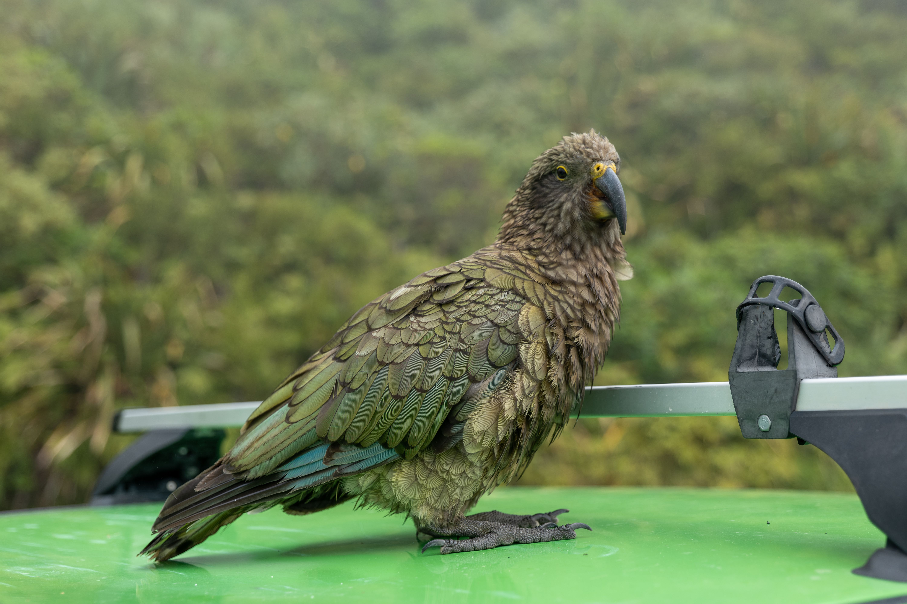
Intervals containing play: 4 of 6
One-zero score: 4/6 = 66.7%
We cannot say that the parrots spent 66.7% of their time playing, or determine how many separate play bouts occurred.
MODULE 2 · SAMPLING AVIAN BEHAVIOUR
You are studying a group of parakeets. Match each research objective to the sampling or recording rule that would best produce the evidence you need.
You want to calculate exactly how long one parakeet spends preening during a 10-minute observation.
Every minute, you want to estimate how many visible parakeets are feeding, resting or preening.
You are exploring a newly observed social behaviour and want to document the different behaviours that occur before designing a structured study.
You want to know which 10-second intervals contain at least one bout of play, but cannot continuously record every event.
Remember: sampling rules determine who or what you observe; recording rules determine how you record the behaviour.
MODULE 2 · QUICK CHECK
Choose the method that best matches each research question.
1. You want to estimate the proportion of time an individual bird spends preening.
Choose an answer to see feedback.
2. You want to compare insect availability between two wetland sites.
Choose an answer to see feedback.
3. You want to test whether vigilance changes when another bird approaches.
Choose an answer to see feedback.
MODULE 2 · FIELD METHODS
Different approaches reveal different aspects of a bird's behaviour.
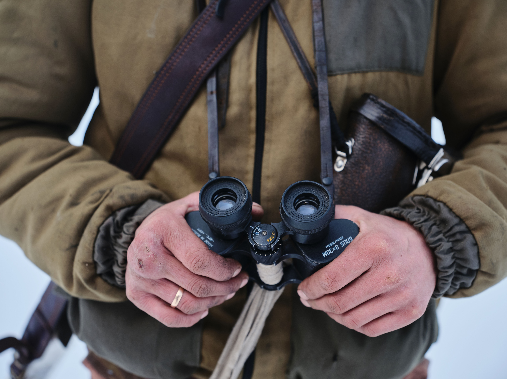
Observe birds directly using binoculars, spotting scopes or the unaided eye.
Useful for: feeding, courtship, social interactions and parental care.
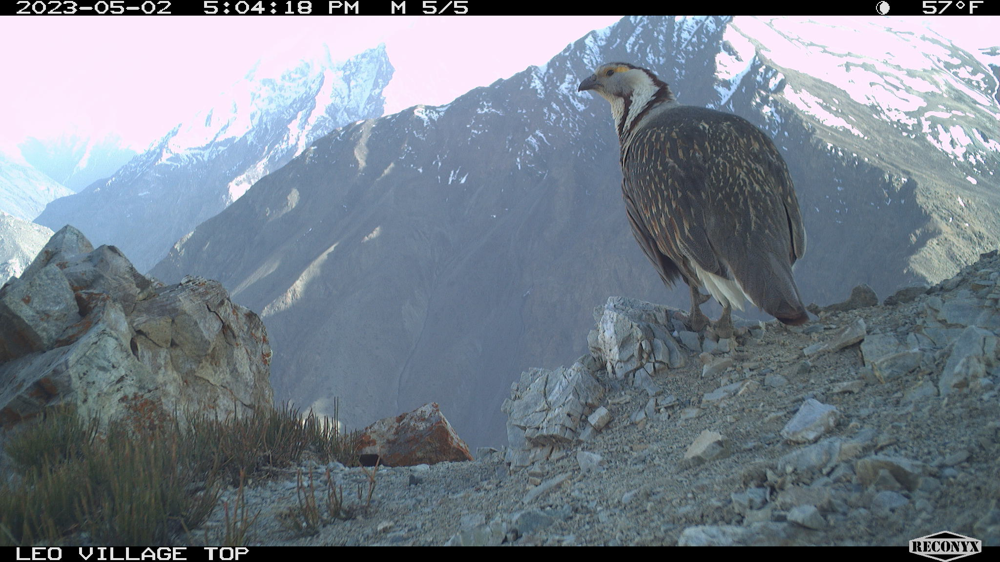
Use camera traps, nest cameras, live cameras or drones to record behaviour.
Useful for: nest activity, interactions and behaviour outside observation periods.
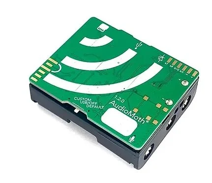
Record vocalisations using handheld recorders or autonomous recording units.
Useful for: songs, calls, alarm vocalisations and daily patterns of vocal activity.
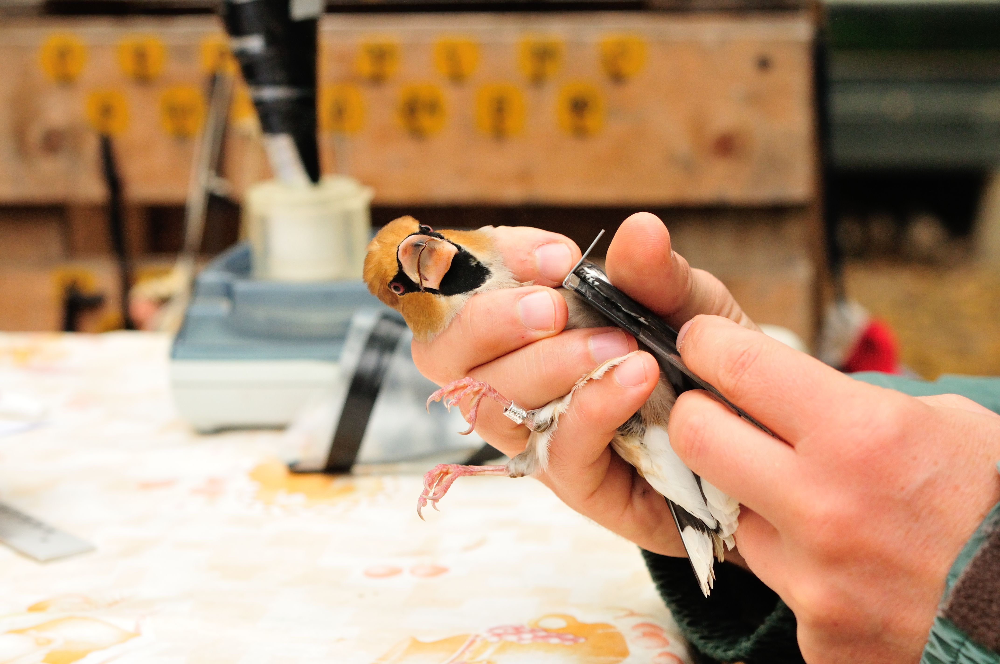
Use GPS tags, radio telemetry, accelerometers, RFID readers or indirect evidence.
Useful for: movement, activity patterns, individual identification and behavioural clues.
MODULE 2 · OBSERVING BIRDS IN THE FIELD
Can we study bird behaviour without observing birds ourselves? Existing records can reveal behaviours, patterns and changes across time.
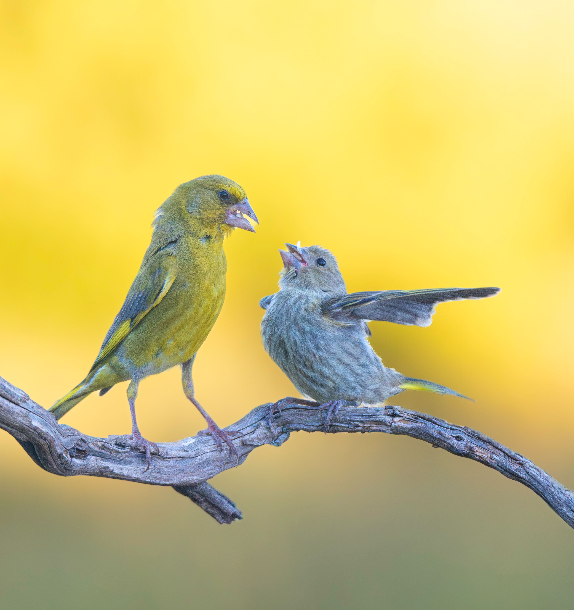
Find records of tool use, courtship, feeding interactions or predator responses.
Example question: How do crows handle unfamiliar food items in urban settings?
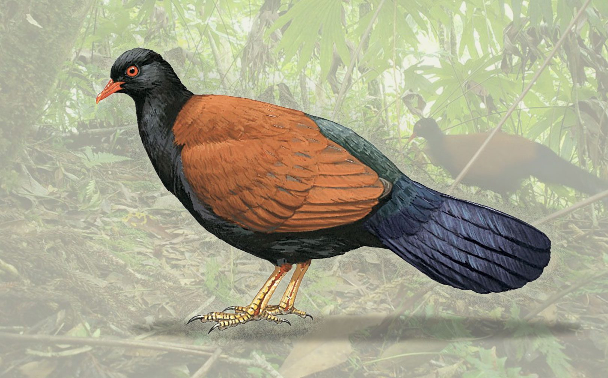
Use old field notes, diaries and published accounts to reconstruct occurrence.
Example question: Where was this bird last found?
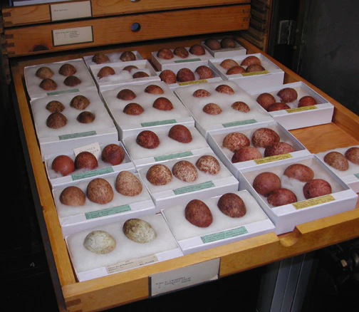
Use egg collections, specimens and collection dates to investigate reproductive timing and life history.
Example question: Has egg-laying timing shifted over time?
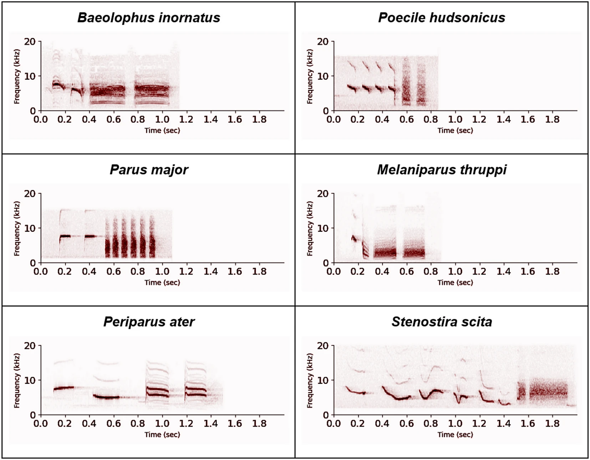
Analyse archived recordings to study song structure, calling patterns and geographic variation.
Example question: Does song structure differ between populations?
MODULE 3 · SAMPLING AVIAN BEHAVIOUR
How many times does an event occur?
Example: 12 feeding attempts in 10 minutes.
How long does a behaviour last?
Example: 4 minutes spent preening.
How many separate episodes occur, and how long are they?
Example: three distinct foraging bouts.
What fraction of observation time is spent in a behaviour?
Example: vigilance duration divided by total observation time.
MODULE 3 · SAMPLING AVIAN BEHAVIOUR
An ethogram is a structured list of behaviours with definitions that help observers record them consistently.
Behaviour nameA concise label, such as preening or vigilance.
DefinitionAn operational description based on observable actions.
Timing ruleHow the start and end of a behaviour are identified.
Ambiguity ruleHow overlapping or uncertain behaviours are recorded.
Example: Two observers watch the same bird. One records every head-raise as vigilance; the other records only head-raises accompanied by scanning. Their records differ because their definitions differ.
MODULE 4 · STUDYING BIRD MIGRATION
Migration unfolds across time and space. Different field methods reveal different parts of the journey—from when birds arrive to where they travel.
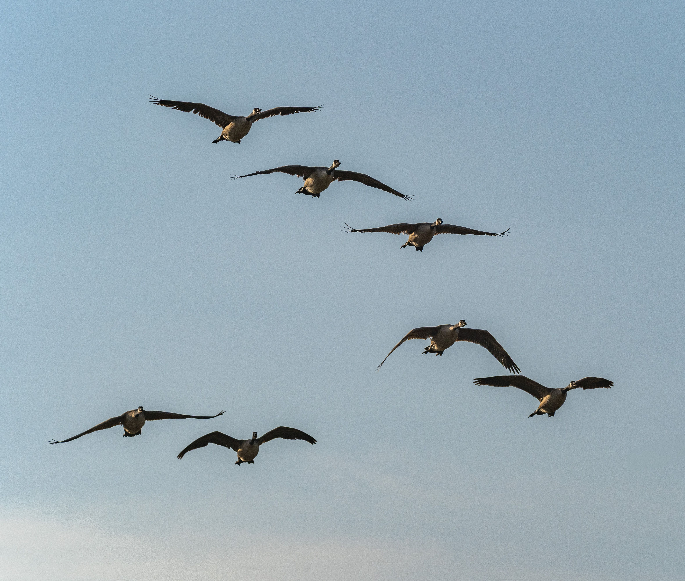
Count birds passing a watchpoint or arriving at a stopover site.
Reveals: passage timing, direction and relative numbers.
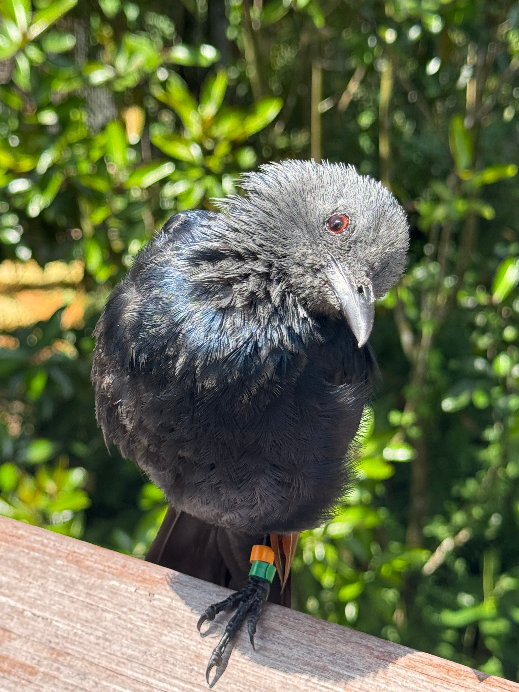
Mark individual birds and record where and when they are encountered again.
Reveals: connections between sites and individual movements.
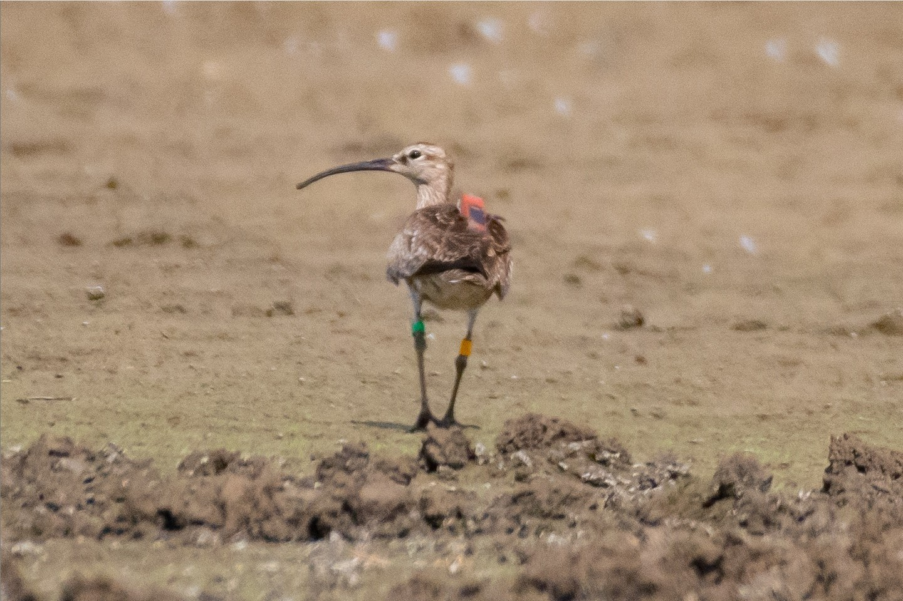
Use suitable tracking tags to record locations during a bird's journey.
Reveals: routes, stopovers and travel schedules.
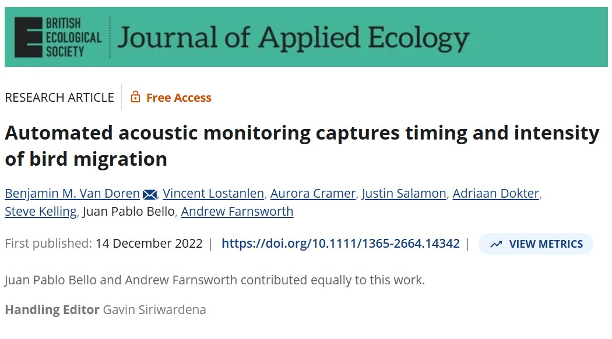
Record calls and flight calls at migration sites, including during darkness.
Reveals: timing and intensity of vocalising migrants passing a site.
Bird records collected for different purposes can reveal large-scale and irregular patterns of movement.
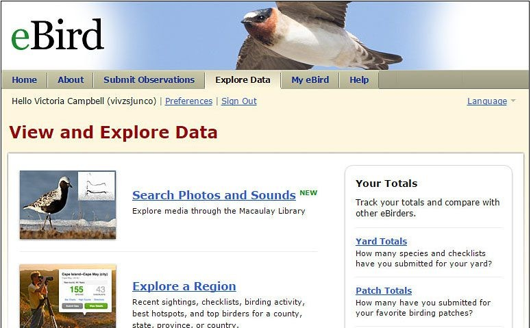
Use community-submitted bird sightings to investigate seasonal occurrence, changes in distribution and unusual influxes of birds.
Example question: Does a species appear in unusually high numbers outside its typical range during certain years?
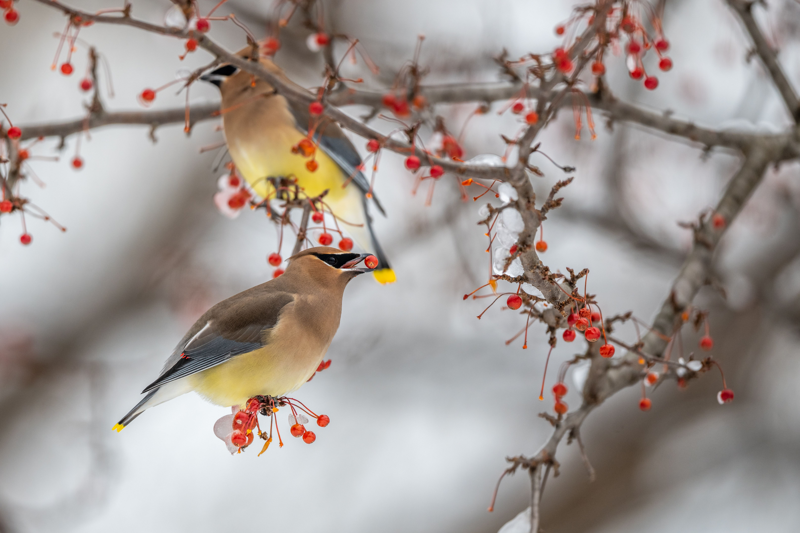
Researchers used long-term records of rowanberry availability in Finland and winter observations of Bohemian Waxwings in Scandinavia to investigate how food availability relates to irruptive movements.
Example question: How does food availability influence when and how many Bohemian Waxwings move south during winter?
Key idea: Existing observations can reveal migration patterns across places and years, even when individual birds were never tracked.
MODULE 4 · STUDYING BIRD MIGRATION
How long do birds remain, where do they feed, and when do they depart?
Evidence: repeated observations and individual tracking.
Which route is followed, and where do birds stop?
Evidence: tracking data and coordinated observations.
When do birds arrive or depart in different years?
Evidence: repeated seasonal monitoring.
Are migration timing or routes changing over the long term?
Evidence: comparable long-term datasets.
MODULE 4 · QUICK CHECK
Different methods reveal different aspects of migration. Match each research objective to the most appropriate source of evidence.
You want to estimate when and in what numbers birds pass a particular watchpoint during autumn.
You want to reconstruct an individual bird's route and identify its stopover sites.
A species observed at one site is later encountered at another. You want evidence that the two sites are connected by individual movements.
You want to detect the timing of vocalising migrants passing overhead after dark.
You want to investigate where a species occurs in different seasons using sightings contributed by birdwatchers.
You want to investigate whether long-term food availability is associated with unusually large southward movements in some winters.
Choose a method based on the evidence you need—not simply on the equipment available.
MODULE 4 · QUICK CHECK
Migration questions can focus on a single stopover, an entire route, seasonal patterns or changes over decades. Match each question to the scale and evidence needed.
You want to determine how long individual migrants remain at a wetland before departing.
You want to identify the route followed by a bird travelling between its breeding and wintering grounds.
You want to compare the arrival and departure dates of a migrant species across different years.
You want to test whether migration timing has shifted over several decades in association with changing climate.
The scale of the research question determines the time span, geographic coverage and resolution of the evidence you need.
DAY 2 · TAKEAWAY
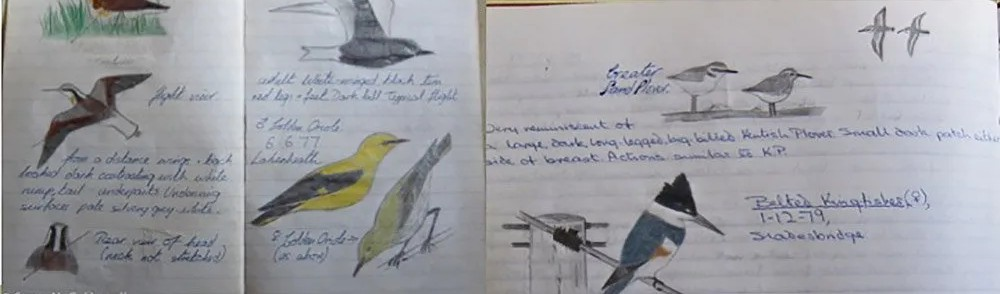
01 Begin with the research question.
02 Decide what needs to be observed and measured.
03 Decide what sampling rule and recording rule to apply.
04 Choose movement methods that fit the scale.
05 Evaluate what the evidence can establish.